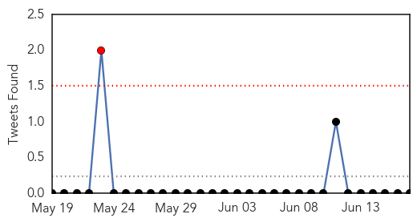
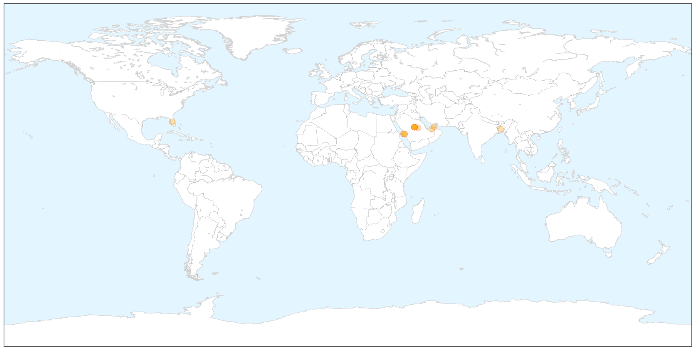
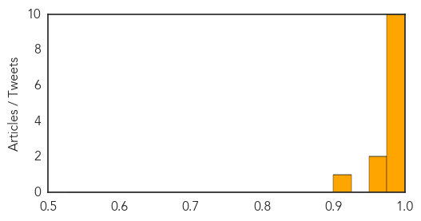
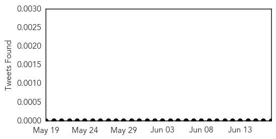

MERS
30-Day Web Trend
0 alerts, 0 warnings

30-Day Twitter Trend
1 alerts, 0 warnings

Article Locations

X

Article Confidences
Top Articles:
- 0.999
- Two Cases Of MERS CoV Infection Reported In Saudi Arabia
- 0.999
- MERS is Abating, But Still Could Threaten Hajj
- 0.999
- US MERS Patients Did Not Spread Virus in Hospitals or Homes
- 0.999
- WHO panel still sees no MERS emergency
- 0.997
- WHO statement on the Sixth Meeting of the IHR Emergency Committee concerning MERS-CoV
- 0.996
- MERS virus suspected in Port Sudan - Sudan
- 0.995
- UAE has played a major role in tackling Mers, global health chiefs say
- 0.995
- Morocco Recommends Its Citizens to Cancel Their Pilgrimage to Mecca
- 0.994
- Americans infected with MERS have not spread disease, CDC says
- 0.993
- U.S. MERS patients did not infect families, hospital workers
- 0.975
- Personal hygiene can prevent MERS
- 0.955
- MERS virus reported in Bangladesh
- 0.909
- Dubai tests 1,000 camels to conduct Mers study
Top Tweets:
-
No tweets found for Jun 17, 2014
Chikungunya
30-Day Web Trend
12 alerts, 1 warnings

30-Day Twitter Trend
0 alerts, 0 warnings

Article Locations


Article Confidences

Top Articles:
- 1.000
- Caribbean chikungunya cases top 170,000
- 0.999
- New mosquito-borne virus is a threat, experts say
- 0.996
- Georgia Woman Describes Crippling Pain of Chikungunya Virus
- 0.996
- Georgia Woman Describes Crippling Pain of Chikungunya Virus
- 0.995
- Mosquito-borne virus may soon hit GA, health dept. warns
- 0.992
- Florida chikungunya cases continue rise, 70% related to Haiti travel
- 0.987
- Mississippi investigating case of chickungunya, a mosquito-borne illness found in Africa, Asia
- 0.986
- CDC: Mosquito-borne disease spreading to US
- 0.986
- Painful New Virus Symptoms Can Last a Year or More
- 0.969
- MSDH investigates first possible case of chikungunya in Miss.
- 0.956
- Two suspected cases of incurable mosquito-borne virus in N Ga.
Top Tweets:
-
No tweets found for Jun 17, 2014